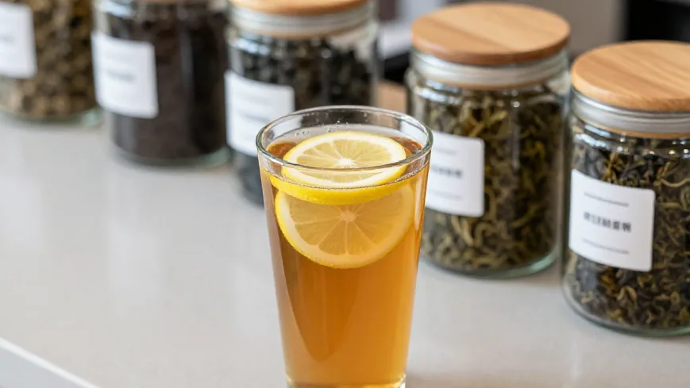
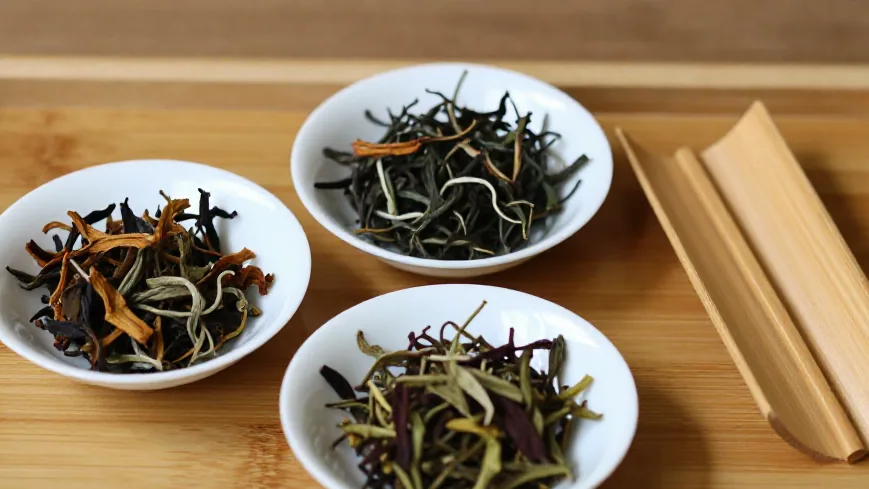
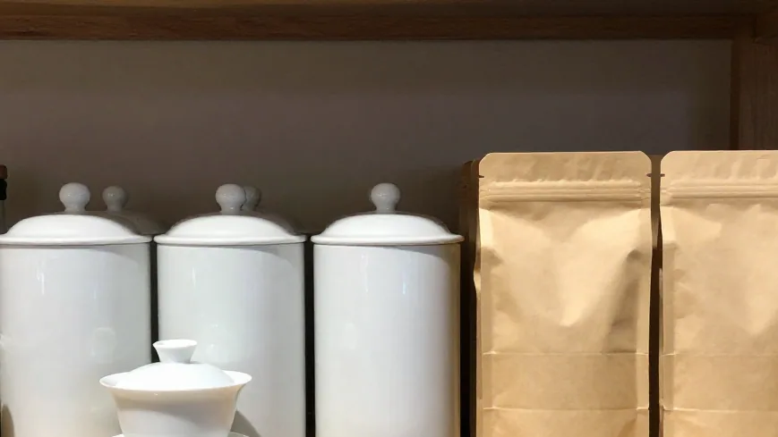

立冬是 11 月 7 日，雪片是立冬之后才动手开采的冬茶，头拨真正上市要等到 11 月下旬到 12 月初。所以现在朋友圈、小红书上满屏喊「2026 头拨雪片上新」的，比茶农自己报的开采时间早了至少半个月——那一批，多半不是雪片，是秋茶换了个皮。阿凤姐教你三招，三分钟之内看穿它。
🌿 开篇问答：雪片到底是什么？现在能不能买？
Q1：雪片是什么茶？是品种吗？
阿凤姐一句话讲透：「不是品种，是时节。」雪片就是立冬之后开采的最后一轮冬采，同一棵凤凰单丛茶树做出来的茶叫雪片。鸭屎香、大乌叶、蜜兰香，都可以有「雪片版」。
Q2：今年什么时候才能买到正宗的头拨雪片？
立冬是 11 月 7 日，头拨雪片一般 11 月下旬才开始集中上市，12 月初才铺开。11 月上中旬就喊「头拨」的，多半是早采冬片或秋茶换皮。
Q3：怎么分辨秋茶和雪片？
三招：①验涩度（雪片涩感低，秋茶多带涩）；②验香型（鸭屎香奶香饼干香，大乌叶甘蔗水式清甜）；③验叶底（精制茶条索匀整无梗、汤色金黄琥珀；毛茶条索粗有梗、汤色暗）。惠州本店可带你自己买的茶上门，免费拆茬口、辨年份。
【第一幕：朋友圈里的「头拨雪片」】
十一月初的惠州，天气终于有了秋天的样子。下午三点多，东湖花园一区沿江商铺 89-136，阿凤姐正在柜台上封茶，门帘一掀，走进来一位姓陈的茶友，手机还举着。「凤姐，这个怎么样？头拨雪片鸭屎香，源头茶农手工做出来的，四百八一罐，我抢了三罐。」阿凤姐接过手机看了一眼，没有立刻回话，先问：「包装上写了年份和采摘节气没有？」陈老板翻了几下：「就写『2026 头拨』……节气没写。」「那就对不上。」阿凤姐把茶叶罐推回他面前，「单丛一年五轮采摘：春茶、二春、夏暑、秋茶、雪片。雪片是立冬之后才采的冬茶，十一月七号立冬，早也得在立冬之后动手，头拨集中上市是十一月下旬到十二月初。你现在买到的『头拨』，比节气早了半个月以上——这不是雪片，是早采的平地冬片，或者干脆是秋茶。」正在这时，忠哥推着两箱茶青进门，是从凤凰镇赶上来送货的。他听了半句就乐：「阿凤姐讲得啱。雪片我今年自己做的，十一月二十才动第一轮手。你同佢讲，我卖茶卖了三十几年，没有农户十一月十号就出雪片。」陈老板愣住：「那我这三罐……」「先别扔。」阿凤姐说，「秋茶也不是不能喝，只是别当雪片卖这个价。你把这事记住：一个价位，买的是哪一季的叶子，得先对上日历。」
【第二幕：开完那场会，茶农心里都有一本账】
十一月初，阿凤姐在店里接了姚老师的电话——他那间茶馆的师傅前几天去了凤凰镇，开会回来，一肚子话。「十一月初三号，凤凰镇开了一场座谈会，来的全是专家、茶企老板、还有山上的茶农。」姚老师在电话里说，「讲的什么？讲古茶树、讲溯源、讲标准、讲怎么把小散乱做成大产业。」阿凤姐听得认真。「古茶树那段我听过了——老专家讲，古茶树跟家里的老人一样，身体偏弱要精心养护，采叶要『留叶养树』，价钱好的时候更不能把叶子采光，光合作用不够，茶树会衰会死。这句话讲得好，讲到了骨子里。」姚老师接着说：「还有一个讲精加工的短板，说得挺狠。说现在单丛茶区是千家万户的小作坊、农户为主，大多数只卖初制的毛茶，缺乏拣剔、筛分、提香这些精加工的手艺，只能低价出售，接不了大单。建议政府扶持小型精制示范点，把零散的茶农组织起来统一品控。」「这就是我天天跟客人讲的道理嘛。」阿凤姐笑，「毛茶跟精制茶，中间隔着一趟手艺。毛茶是叶子，经过拣剔、筛分、控火候提香出来的才叫茶。你买到四五百一罐的『雪片』，若真是雪片，它本身就值；若是秋茶换皮，你买到的很可能只是毛茶价的茶，却付了精制品的钱。」「还有个更要紧的，」姚老师压低声音，「会上有人说，这几年凤凰单丛名气越来越大，低山茶价格却在下滑，外地茶冒用『凤凰单丛』名字卖的乱象时有发生，直接影响本地茶农茶企收入。所以要溯源，要以村为单位预估产量、发放溯源凭证。凤姐，你店里做的每一罐，都写清楚产地、品种、采摘季，这就是溯源最土也最实在的做法。」「我这店就一块招牌，一个地址，」阿凤姐说，「茶是凤凰镇的，电话打到我这里，人跑不掉。卖假的人才需要躲起来。」
【第三幕：小美的鸭屎香柠檬茶，和涨起来的茶头】
说到鸭屎香，这两年最热的词不是茶桌，是奶茶店。小美在惠州东平开了三年奶茶店，上个月专程跑了一趟凤凰镇。她坐在阿凤姐店里，把手机里的门店截图翻给大家看：「凤姐你看，这杯鸭屎香柠檬茶卖十八，我一个月卖掉三千多杯。我调奶茶用的是糖浆、是配方，从来没想过一片叶子要经过这么多手。」「你用的茶头，就是我们这里被人当废料处理的茶梗茶头。」阿凤姐说，「前些年一斤几块钱，现在一斤十几块。有人算过，新茶饮这个赛道，国内市场规模已经突破三千亿，门店逾四十万家，乌龙茶在它的原料体系里占三分之一。茶头茶梗从废料变成金银，有人赚到了，有人被挤出去了。」小美不解：「被挤出去？」「原料茶大多经过中间供应商转手，能直接给头部品牌供货的极少。」阿凤姐说，「品牌方要的是稳定配方和标准化配套，潮州本地茶企的研发能力跟不上，增值的利润全留在中间环节，源头只赚廉价利润。你以为茶农苦，其实中间那一段更肥。」她把小美的杯子推回去：「所以我才同你讲，源头的手艺你要懂。你懂了底茶，才知道奶茶该配什么香型、该用多少克、该出几道汤。你以为你在卖糖浆，其实你在卖一泡单丛的底。」「那雪片能不能做奶茶？」小美眼睛一亮。「可以，但别急。」阿凤姐说，「雪片是冬天的叶子，香高扬、清冷，入口几乎不苦不涩，回甘带冰糖甜；可它的汤水醇厚绵密确实比不过春茶。你拿雪片做奶茶，格局开了，但你得接受它的『薄』。想配奶茶要醇厚的底，还是用秋茶老丛那一路更稳。」

【第四幕：一条价差链，三个换皮的层级】
忠哥把带来的茶青安顿好，坐下来喝了两口茶，说起了今年的行情。那是他最熟的事。「今年的秋茶，量是少的。」他说，「台风尾巴那几天豪雨，路通了六天，山上的茶采迟了一周。有的人心急，叶子采老了，头香就弱了。价钱上，顶级八仙、鸭屎香的秋茶比去年高了一成上下；半老丛蜜兰香的秋茶，市场上一斤大概一千八到两千四；春茶同档的，能到两千八到三千五。你自己算，这个价差摆在那里，人心就会动。」「动在哪里？」陈老板问。「换皮。」忠哥说，「秋茶大乌叶，底价一百块一斤；雪片大乌叶，两百；雪片鸭屎香，四百。一级一级翻倍，卖的就是这层皮。鸭屎香秋茶因为秋天发芽少，底价反倒不低——所以你见到把『鸭屎香』卖成大乌叶价的，先怀疑品种。还有更荒唐的：雪片要立冬后才采，八月底九月初就喊『新雪片上線』，喊得越急越要划走。」阿凤姐接过话：「我这里还有一层。制茶老师傅说，单丛现在最大的短板不在做青，在精加工。茶农只卖毛茶，毛茶要拣剔、筛分、提香才能成货。你摸一摸正宗的精制茶，条索匀整、没有碎末、没有茶梗；毛茶上手是毛的，有梗，泡出来汤色也浑。有些人拿毛茶冒充精制品卖你，那是第二层的偷。」她把三碟茶推到桌上：「大乌叶秋茶、鸭屎香秋茶、雪片鸭屎香。现在你不用看价钱，用鼻子和嘴巴就能分。」「雪片汤顺涩低，回甘甜，凉了更清；秋茶多数带涩，工艺好的涩感少，但概率低。鸭屎香带奶香、饼干香；大乌叶是甘蔗水式的清甜。你要是按『雪片』的价付了钱，入口明显锁喉发涩，基本可以确定买的是别的茬口。」

【第五幕：三分钟验茶，老茶客的方法】
王阿姨是店里的老茶客，那天下午一直在旁边听。这会儿她端起一杯，站起来说：「凤姐，我插一句。我买了二十年单丛，早期那些花头不懂，后来是茶馆老板教我三招——对日历、验涩度、验香型。今天我说得对不对？」「你说得比我透。」阿凤姐笑，「我补一句：验汤色。正宗凤凰单丛，汤色是金黄琥珀，透亮；洗茶第一泡倒掉的时候，叶底应该是绿黄带一点红边的嫩叶，而不是暗红发黑的老叶。叶底一摊开，好茶和假茶一眼分开。」姚老师这个时候赶过来了，手里提着两罐茶：「正好，凤姐，我上午收到一批货，说是『2026 头拨雪片鸭屎香』，四百八。我拆开看了，条索粗、梗多、汤色偏暗。」「那就是秋茶。」阿凤姐说。「换个名儿四百八；同样这个茶，作秋茶卖一百二。」「那就是黑心。」姚老师笑了：「所以我全部退回，一斤不收。钱要赚，但茶价不能乱。乱一次，整条街都难做。」阿凤姐把三碟茶重新推到王阿姨面前：「阿姨，你教他们。」王阿姨端起一杯，闭眼闻了闻：「这杯是鸭屎香，有奶香有饼干香，凉了带花香——这是雪片。这杯入口涩，尾段有甘蔗甜——这是秋茶大乌叶。」「对了。」阿凤姐说，「你看，什么都不用记，只要鼻子干净、舌头诚实，谁也骗不了你。」
【收尾：行业干货 · 怎么分辨、怎么挑、怎么泡、怎么存】
**第一步，先对日历。** 单丛一年五轮：春茶（三月下旬至五月初）、二春、夏暑、秋茶（白露前后至十月下旬）、雪片（立冬后）。立冬是 11 月 7 日，头拨雪片 11 月下旬才开始。现在标「头拨雪片」的，先当秋茶看。另一条铁律：海拔七百米以上的乌岽只采春一茬，基本不产秋茶——凡是把「高山」和「秋茶」「雪片」写在一起的，先打问号。
**第二步，再看价位带。** 今年秋茶口粮价在每斤一百上下，好一些的两三百；雪片大乌叶两百，雪片鸭屎香四百上下。清香型雪片也有每斤七八十的现货，带罐的能到两百八。价格带这么宽，说明「贵＝好」在这里根本不成立，适口为珍。
**第三步，验三个口。** 验涩度：雪片汤顺涩低，秋茶多带涩。验香型：鸭屎香有奶香饼干香，大乌叶是甘蔗水式清甜。验叶底：精制茶条索匀整无梗，汤色金黄琥珀；毛茶条索粗、有梗、汤色偏暗。
**第四步，挑的原则。** 尝鲜一律先买小规格试喝装，喝明白再买大罐；日常口粮两百克一罐最合适，不要囤——高香茶吃的就是新鲜劲。秋茶趁鲜喝，别指望它有陈化价值；雪片可以存一两年等飘香转汤甜。
**第五步，泡的规矩。** 沸水高冲、快出汤、不闷壶；一百一十毫升盖碗配六到六点五克是稳妥比例；第一泡洗茶，第二泡才真正开始；香型越高，投茶量越要克制，否则高香会被闷成苦涩。
**第六步，存的规矩。** 清香型、轻焙的雪片和单丛，密封后放冰箱冷藏，但必须密封，不然会吸味——很多人只会把茶塞冰箱，结果茶染了葱味；焙火单丛、老丛、白茶、普洱，常温、避光、密封、远离异味。雪片密封常温也能搁一两年。

📍 惠州买茶去哪？阿凤姐茶叶店欢迎你
🏪 店铺：阿凤姐茶叶店（惠州凤凰茶业）
📍 地址：惠州市惠城区东湖花园一区沿江商铺89-136
📱 电话：13435567385（微信同号，支持全国快递）
⏰ 营业时间：每天 9:00-21:00，全年无休
🚗 停车：东湖花园沿街有停车位，导航搜索「凤凰茶业」即可
🍵 店内主营：潮州凤凰单丛全系列（雪片、秋茶、蜜兰香、鸭屎香、大乌叶、老丛等）、新会陈皮、茶礼定制；带你自己买的茶上门，免费拆茬口、辨年份。